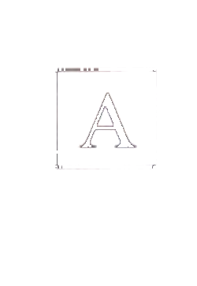
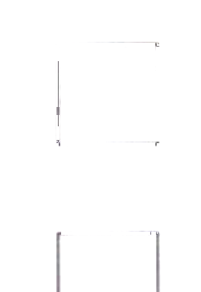
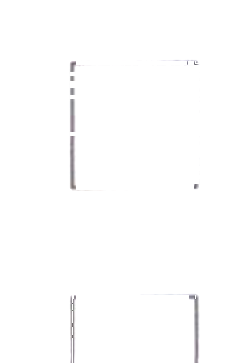
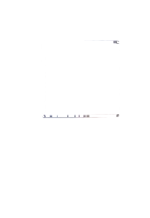

Nǐ hǎo!例如：女：你好！Nǐ hǎo! Hěn gāoxìng rènshi nǐ.男：你好！很高兴认识你。
How do you do?
How do you do? Nice to meet you.Как дела?
Как дела? Приятно познакомиться.6.
7.
8.
第四部分 Part IVPart IVЧасть IV
第9—10题：听句子和问题，选择正确答案。每题听两次。Questions 9–10: Listen to each sentence and question, and choose the correct answer. Each sentence and question will be played twice.Вопросы 9–10: Прослушайте каждое предложение и вопрос и выберите правильный ответ. Каждое предложение и вопрос будут проиграны дважды.
Xiàwǔ wǒ qù chāoshì, wǒ xiǎng mǎi yìxiē shuǐguǒ.例如：下午我去超市，我想买一些水果。Shuōhuàrén xiàwǔ qù nǎlǐ?问：说话人下午去哪里？
I'm going to the supermarket this afternoon. I want to buy some fruit.
Where is the speaker going this afternoon?Я иду в супермаркет сегодня днём. Я хочу купить немного фруктов.
Куда говорящий идёт сегодня днём?chāoshìA 超市yīyuànB 医院xuéxiàoC 学校
A supermarket
B hospital
C schoolA супермаркет
B больница
C школаwèn wèntí zhǎo rén wán kàn yīshēngA 问问题 B 找人玩 C 看医生
fàndiàn xuéxiào péngyou jiāA 饭店 B 学校 C 朋友家